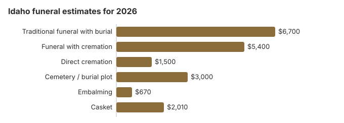

Funeral Costs in Idaho: What Families Pay in 2026
We estimate an Idaho funeral with burial at about $6,700 in 2026, a service with cremation at $5,400 and a direct cremation at $1,500. Two homes in the same town can still be thousands apart on the same service, and in much of rural Idaho the distance to the nearest home adds mileage. This page goes through each charge, the county and VA help available, and what Idaho law does and does not require.
Idaho Funeral Charges in Detail
Each line below is our estimate for Idaho. The Board of Morticians licenses homes but does not set what they charge.
| Item | Our figure | Range |
|---|---|---|
| Traditional funeral with burial | $6,700 | $5,025 – $8,710 |
| Funeral with cremation | $5,400 | $4,320 – $7,020 |
| Direct cremation | $1,500 | $1,050 – $2,100 |
| Cemetery / burial plot | $3,000 | $1,500 – $6,000 |
| Embalming | $670 | $500 – $1,500 |
| Casket | $2,010 | $670 – $5,360 |
How we got these figures: they are our own modelled estimates for Idaho, not prices collected from Idaho funeral homes, and they are not a quote or professional advice. Read our method and the disclaimer before relying on them.
State sources: Idaho Division of Occupational and Professional Licenses; State Board of Morticians; Idaho Code § 31-3412.

Idaho Add-Ons to Question
Most of the pricing surprises in Idaho come from a predictable list of add-ons.
- Embalming billed as compulsory. Idaho requires it only when a body is held over 24 hours without refrigeration.
Idaho Prices City by City
Our estimates for Idaho's larger cities:
Why Idaho Quotes Vary
Land prices, competition and distance all move an Idaho bill.
Boise-area homes face more competition but higher costs, while rural homes have fewer rivals and longer drives. With 65% of Idaho families now cremating, cremation-only providers keep direct cremation prices down in the larger towns.
Lowest-Cost Idaho Funerals
| Choice | Cost | Includes |
|---|---|---|
| Direct cremation | $1,500 | Cremation only; the coroner signs off and a permit is issued, with no waiting period (IDAPA 24.08.01.100; Idaho Code § 39-268). |
| Direct burial | $3,350 | Quick burial with no embalming or viewing; the cemetery charges for the grave and its opening. |
| Green burial | $3,685 | No embalming and no vault, in a cemetery or green section that allows it. |
| Cremation + memorial | $5,400 | Cremation, memorial afterwards |
| Traditional funeral | $6,700 | Viewing, service, burial |
Idaho Cremation and Burial Guides
Go deeper on either choice:
Cremation Costs in Idaho
About 65% of Idaho families cremate. Expect $1,500 or so direct and $5,400 with a service; urns and scattering are covered.
Burial Costs in Idaho
With a plot near $3,000 plus casket, vault, marker and opening, an Idaho burial totals $14,910 to $19,410.
Idaho: Cremation or Burial
Cremation
- $1,500 or so direct
- $5,400 or so with a service
- No grave needed
- Ashes kept, buried or scattered
- 65% of Idaho families choose it
Traditional Burial
- $6,700 or so for the funeral
- About $3,000 for the plot
- Most cemeteries expect an outer container
- A grave to visit
- Metal casket: US median $2,500 (NFDA 2023 General Price List Study); Idaho prices vary
Money Help for Idaho Families
- Counties pay for an indigent burial or cremation at their own set or negotiated rate, and the coroner steps in if nobody claims the body within 14 days (Idaho Code § 31-3412).
- Social Security's $255 must be claimed by the widow, widower or eligible child at 1-800-772-1213 within two years.
- Whoever paid for a veteran's funeral can claim on VA Form 21P-530EZ: for a death on or after October 1, 2026 not linked to service, that is up to $1,032 for burial and $1,032 for a plot (see our veteran burial benefits guide).
- More options for Idaho families, including Medicaid and charity help, are in our funeral payment assistance guide and how to pay for a funeral with no money.
Educational Resources
- Funeral Consumers AllianceIndependent nonprofit consumer advocacy for funeral rights
- FTC Funeral RuleThe federal rule protecting funeral consumers
- Funeral Insurance GuideCompare final expense and burial insurance options
- Best Burial Insurance CompaniesSide-by-side comparison of top burial insurance providers
- Payment Assistance GuideGovernment programs and financial help for funeral costs
- Insurance Plan ComparisonCompare coverage, premiums, and payout speed across providers
Compare Funeral Costs
- Average Funeral Cost in 2026National cost breakdown with real prices
- Cremation vs. Burial Cost ComparisonSide-by-side price comparison to help you decide
- Funeral Cost BreakdownEvery line item explained: know what you're paying for
- Cheapest Funeral OptionsLower-cost alternatives, with typical price ranges
- Direct Cremation: Most Affordable OptionNFDA 2023 median $2,645 with a family-supplied container (latest available)
- How to Compare Funeral PricesStep-by-step guide to getting the best price
Federal Price Rules in Idaho
Complaints that an Idaho home broke the federal rule go to ftc.gov; the Funeral Consumers Alliance offers free advice.
Distance and Price in Idaho
Our $6,700 Idaho average is modest for the Mountain West, though Boise quotes often run above those in the rest of the state. Mileage shows up on Idaho price lists more than in most places: when the home is over 30 miles from the house or the cemetery, expect $100-$400 extra.
Arranging an Idaho Funeral
- Choose cremation or burial: cremation in Idaho or burial in Idaho.
Idaho death certificates: $16 each
Idaho's Bureau of Vital Records and Health Statistics charges $16 for every certified copy, the first or the fifth; a dollar of that goes to the coroner training fund under Idaho Code § 39-252. A search that finds no record also costs $16, and a $10 one-time charge moves an order to the front of the queue (Idaho Health and Welfare, ordering a death certificate; checked October 29, 2026).
- No counter: the Boise bureau has no public window. Orders go by mail to P.O. Box 83720, Boise, ID 83720-0036, with a signed check or money order to Idaho Vital Records and a copy of ID showing signature and expiry, or online through VitalChek, the state's only official partner.
- Timing: most mailed orders take one to three weeks; rush orders five to seven days. Regular mail return costs nothing. The state office holds death records from July 1911; for deaths between 1907 and 1911, ask the county recorder.
- Eligibility: copies go to people with a "direct and tangible interest", meaning immediate family, legal representatives, or someone who needs the record to claim property. Idaho death records stay confidential for 50 years.
The state warns that other websites selling Idaho certificates add fees of their own. Most families need four to six copies, which cost $64 to $96 ordered directly.
Who licenses Idaho funeral homes, and county and veterans help
The Idaho Division of Occupational and Professional Licenses licenses funeral directors and establishments in Idaho; call 208-334-3233 to check a license or file a complaint. Licensing decisions there rest with the State Board of Morticians, whose members include a public member as well as licensed morticians, and its page links to the process for filing a complaint against a licensee.
Idaho does not appear among the nine states the Funeral Consumers Alliance lists as requiring a funeral director, so a family can choose which services it pays for. A cremation needs the coroner's written authorization and a permit, but no set wait (IDAPA 24.08.01.100; Idaho Code § 39-268).
When the county pays
The board of county commissioners must see that an indigent person who dies in the county is buried or cremated, paying no more than the county's own established or negotiated rate. If no one claims the body within 14 days, the coroner makes the arrangements and the county covers what is unpaid. (Source: Idaho Code § 31-3412.) Rates differ by county, so ask the commissioners' office before the funeral home sends a bill. Against our $6,700 average, Social Security's $255, which only a spouse or child can claim, does not go far.
Veterans' graves in Idaho
Snake River Canyon National Cemetery near Buhl (208-732-7499) takes burials on dates the funeral home sets by calling the VA's National Cemetery Scheduling Office (800-535-1117). Idaho also runs two state veterans cemeteries, at Blackfoot (208-701-7161) and Boise (208-780-1340), where the family calls the office itself.
Before you sign in Idaho
- Lay two Idaho homes' printed price lists next to each other.
- Ask whether embalming is really needed, since refrigeration meets Idaho's 24-hour rule.
- Check with the county commissioners about § 31-3412 help first.
- For a veteran, compare a free grave at Buhl, Blackfoot or Boise with a private plot.
- Keep the licensing number, 208-334-3233, handy in case of a pricing dispute.
Frequently Asked Questions
What does an Idaho funeral cost now?
About $6,700 for a traditional funeral, $5,400 for a service with cremation and $1,500 and up for direct cremation. That traditional figure is 19% below the $8,300 US median, and burial adds about $3,000 in cemetery costs.
How much does cremation save in Idaho?
About $5,200 against a $6,700 traditional funeral, and around $8,200 once roughly $3,000 of cemetery costs is counted. Direct cremation runs about $1,500.
What are my rights with an Idaho funeral home?
Federal law gives you an itemized price list, prices by phone and the freedom to buy only what you choose, and the Funeral Consumers Alliance confirms Idaho does not make you hire a director for every step. Licenses and complaints: the Division of Occupational and Professional Licenses, 208-334-3233.
How can I cut the cost of an Idaho funeral?
Compare three price lists before committing, drop package items you do not need, and if cost decides, choose direct cremation at about $1,500. Ask about mileage too; a closer home can save a few hundred dollars.
Does Idaho require embalming?
Only if the body is held more than 24 hours without refrigeration. Idaho's funeral rules (IDAPA 24.08.01.100) require a body held longer than 24 hours before burial or cremation to be embalmed or kept at 36°F or colder. Health officials may also order or forbid embalming to control infectious disease (IDAPA 16.02.10.068).
Cremation in Idaho needs the county coroner's written authorization first. Embalming costs about $670 on this page's estimate; with refrigeration you can decline it for direct cremation or immediate burial.
Are Idaho funerals cheaper than average?
Cheaper. Our $6,700 Idaho figure is 19% under the $8,300 national median (NFDA 2023).
What is Idaho's cheapest funeral option?
The cheapest is direct cremation, from roughly $1,500. Direct burial is the next step up at about $3,350, which is $3,350 below a traditional Idaho funeral.
How do I find a lower-priced Idaho funeral home?
Ring three homes for their direct cremation and immediate burial prices. A casket or urn you buy elsewhere must be accepted without a fee.